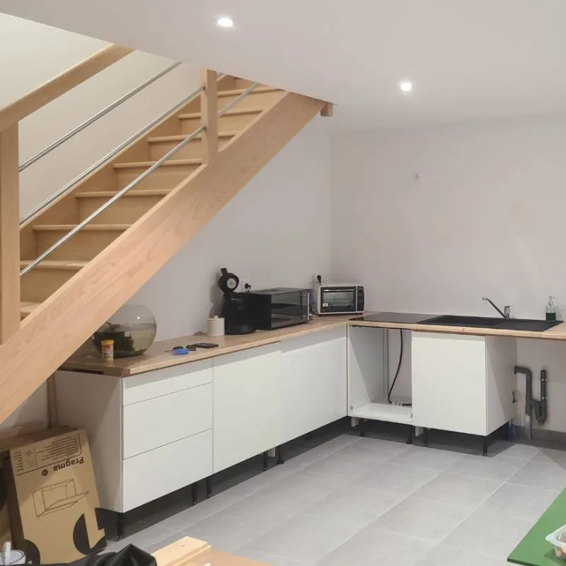
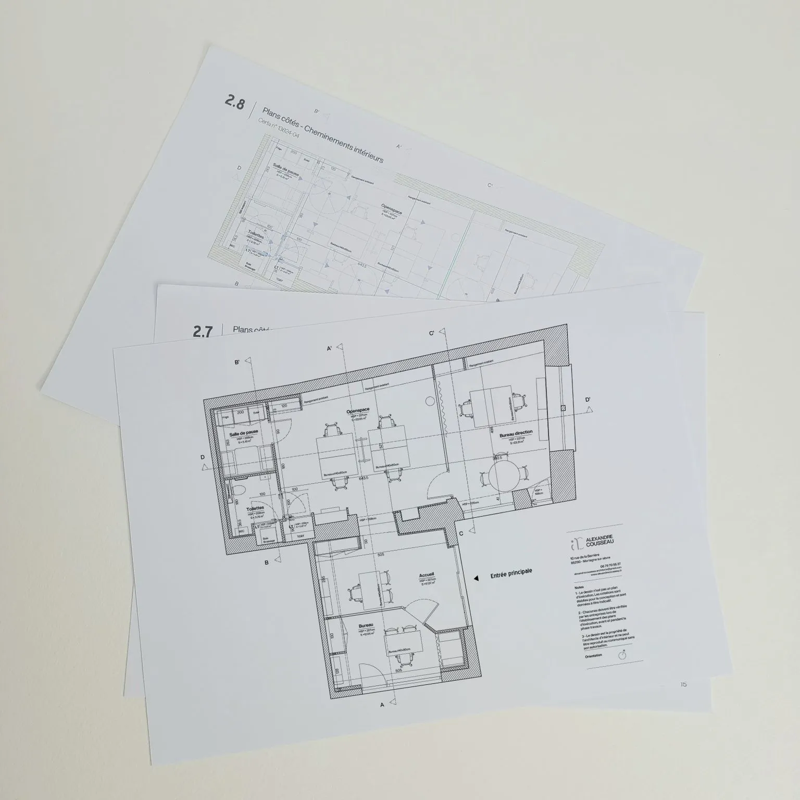
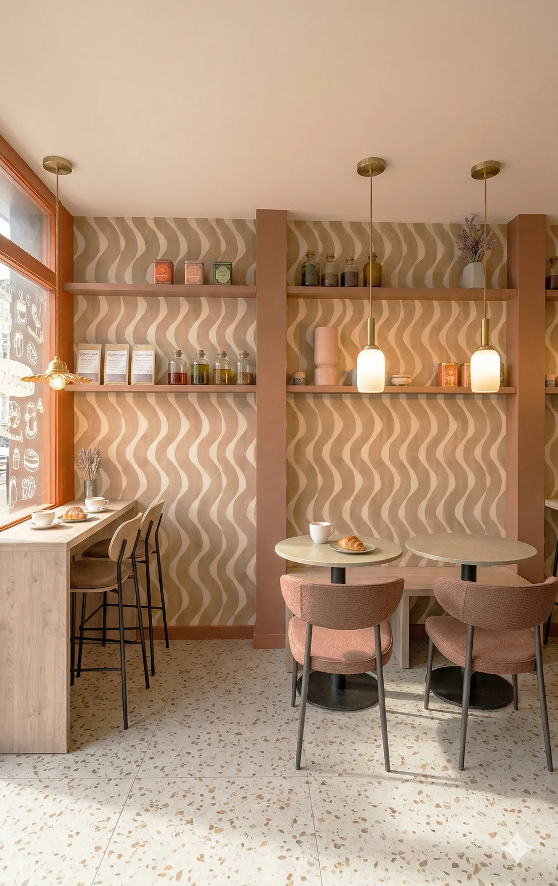
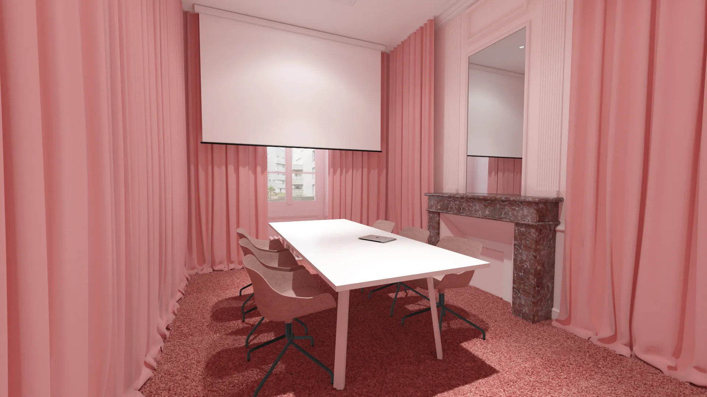

Spoiler : on ne le fait jamais … ou 3 ans après.
Une cliente m’a récemment dit, un peu fatiguée :“Je me suis lassée de l’autorénovation.
Tout prend trop de temps … Les murs ne sont pas tous peints, les plinthes attendent depuis 3 ans, et à force, j’en peux plus.” 😩
Et franchement je la comprends à 200%
L’autorénovation, c’est séduisant au départ : on veut faire par soi-même, avancer à son rythme, éviter des frais.
Mais très vite, c’est de l’investissement, des week-ends sans fin et un chantier en suspens.
Et surtout pour les finitions, ces fameux détails que l’on reporte à “plus tard” … parfois 5 ans, où on finit même par ne plus les voir, alors qu’on ne voit plus que ça 👀
Alors non, mon métier c’est pas juste de faire joli. C’est de vous emmener jusqu’au bout d’un projet, d’une idée, d’une envie.
Parce qu’un intérieur qu’on ne termine jamais, c’est un peu comme un article de blog, qu’on commence, qu’on développe, qu’on …

On me demande parfois :
"Si je n’aime pas la première version, on a le droit de recommencer ?”
ÉVIDEMMENT
Ce n’est pas “Voilà le projet, c’est ça ou rien !”
On retravaille, on ajuste, jusqu’à ce que ça vous convienne.
Je ne suis pas magicien … mais je tends à le devenir 😏 :
En général, en 1 ou 2 versions, on y est.
Pourquoi ? Parce que tout commence par une vraie écoute :
On discute, on observe, on cible.
Ensuite je synthétise tout ça en un projet cohérent et sur mesure.
S’il faut en faire 10 versions, c’est que j’ai raté un truc au départ. Et ça, ça n’arrive pas souvent … sinon je n’en dormirais pas la nuit … 😅
L’esthétique c’est cool. Mais la fluidité c’est mieux 🚀
En tant qu’architecte d’intérieur, mon rôle va bien au-delà de l’esthétique.
Créer des espaces qui inspirent et émerveillent, c’est une première étape.
💎 Mais la véritable valeur ajoutée vient quand ces concepts deviennent concrets, clairs et compréhensibles pour tous ceux qui vont les réaliser.
👷♂️ La coordination entre les différents intervenants sur chantier est souvent un défi.
C’est pourquoi je travaille des plans détaillés lot par lot pour chaque artisan et chaque ouvrage à réaliser.
Ils facilitent le chiffrage, la consultation des entreprises et surtout, permettent au client et à chaque artisan de savoir exactement où prendre repère.
Résultat ?
✔️Moins de malentendus
✔️ Pas de changements de dernière minute
✔️ Des devis plus clairs
✔️ L’exécution des travaux plus fluide
🎯 Ma mission est de définir vos concepts.
Je crois fermement qu’un projet qui a pris le temps d’être bien détaillé est source de gain de temps, et minimise les aléas rencontrés sur chantier.
Et vous ? Vous préférez vos crêpes avec ou sans lait ? (Si vous choisissez la bonne recette, choisissez également un projet avec des plans) 😅
Une cliente m’a récemment confié :
“Je viens de me séparer de mon architecte décoratrice. On n’est pas allé au bout. Rien n’allait” 😐
Je vous épargne les plans faux, la baignoire collée à un mur en parpaing sans isolation et les largeurs de passages de 60cm …
Alors non, on ne fait pas toujours mouche du premier coup. Mais il y a une différence entre concevoir et improviser !
Mon métier, ce n’est pas juste de proposer une ambiance sympa, c’est d’orchestrer, d’anticiper, et vérifier chaque détail.
Un projet bien conçu, c’est :
▪️ Du dialogue et de la bienveillance
🔹 Des allers-retours raisonnables et professionnels
▪️ Des propositions et solutions qui collent à la réalité
🔹 Et un réel suivi, pas un téléphone sur messagerie permanente.
Prendre le temps de choisir le bon professionnel est très important, il s’agit d’un feeling, d’un style particulier et d’une discussion cohérente.
Choisir le bon professionnel, c’est un peu comme choisir un partenaire de danse, il ne suffit pas qu’il sache tous les pas par cœur, il faut surtout que vous ayez ce feeling, ce rythme commun, ce style particulier qui vous parle et qui fait que chacun s’exprime librement.
Alors compare, discute et prends ton temps 😉
En conception, il y a les éléments qu’on choisit …Et ceux qu’on hérite 😅
Projet d’un client : La rénovation d’une cuisine dans une longère familiale transmise sur 3 générations.
Problème : Un joli poteau béton, bien planté en plein milieu de la cuisine existante. 🥴
Le client me dit : “Pas de souci, on peut le déplacer sur le même axe”.
Sauf que s’il a été posé à cet endroit précis, c’est pour une raison et sûrement la reprise de charge de l’étage plus importante ici, qu’à droite.
Résultat, une opération à haut risque et à haut budget, et moi, je dormais pas si tranquille que ça.
Alors, j’ai fait un choix : ne pas lutter contre la contrainte, mais la sublimer et travailler autour. On a complètement revu la disposition de la cuisine :
🔹 Le poteau est devenu l’axe central du plan
🔹 Il a été mis en valeur avec un revêtement de feuille de pierre (et la lumière qui se pose dessus, c’est canon)
🔹 Les espaces de travail confortable s’organisent autour sans bloquer la circulation
🌟 Résultat ? Ce qui était vu comme un défaut est devenu un parti pris fort, presque sculptural.
Le client ? Ravi d’avoir trouvé une autre solution et d’avoir concentré le budget dans le confort de sa cuisine.
Au final, les contraintes ne sont qu’une question de lecture et d’intention.
⭐ Et c’est là justement que la magie opère.
Lors du premier échange avec un nouveau client, les intentions fusent : des envies, des idées, des inspirations…
L’important, c’est l’écoute. On parle de volumes, de fonctions, de “ce serait bien si on pouvait …” Et c’est parfait comme ça !
Mais du coup, …., avec toutes ces idées, le projet serait-il déjà bouclé ?!
Et non, il est rêvé
Vient ensuite en coulisse, la phase de conception où il s’agit de faire la balance entre :
- Ce qu’on veut / peut / doit faire
Exemple réel (un peu exagéré, j’admets) : “Pourquoi pas changer les entrées de la boutique ”, “Ajoutez 4 bureaux fermés dans 50m²”, “Une salle de pause, évidemment !”, “Et pour les archives, la même surface … mais au même niveau. On n’a pas de sous-sol”
Pendant ce temps là, dans ma tête, c’est le rubik’s cube : Je retourne le plan dans tous les sens en fonction de nombreuses contraintes, et à un moment, l’idée émerge.
Celle à laquelle le client ne s’attendait pas, mais qui résout tout.
C’est le moment où on passe de “j’ai plein d’idées mais je ne sais pas comment faire" à “ah ouai … là je suis bluffé”.✌
Et crois moi, cette réaction là, c’est le saint Graal.
C’est ça, la vraie valeur ajoutée de l’architecture intérieure : On a transformé une intention floue en solution claire, cohérente et efficace.
Aller au-delà des attentes, avec du sens.
Mon moment préféré ? La présentation d’un projet !
C’est LE moment de la révélation : l’ambiance, les volumes, les matières, les couleurs …
Tout prend forme et tout semble évident
ET POURTANT
Ce que l’on ne voit pas, c’est la somme d’environ 50 microdécisions successives !
Parfois plus ou moins visibles, mais toujours stratégiques. Chaque choix est le résultat d’un équilibre entre :
▫️ Les contraintes techniques ou structurelles
▪️ Les usages du quotidien
▫️ Les envies du client (dites et non dites ahah)
▪️ Le budget bien sûr !
▫️ et l’esthétique globale, la cohérence du lieu
Un projet n’est jamais un choix RANDOM sorti d’un chapeau. C’est une réflexion fluide mais rigoureuse, où chaque élément répond à un autre
On ne place pas un luminaire, un meuble ou une couleur “parce que c’est joli”. On le place parce que ça a du sens
Le design d’intérieur, c’est un peu comme une partie d’échecs : on anticipe, on ajuste, on compose
Et à la fin, on fait croire que tout ça a été simple 😉
Spoiler : C’est FAUX 😎
C’est le premier argument que j’entends au début d’un projet. Et pourtant … si je vous disais que le noir, bien utilisé, fait exactement l’inverse ?
◾️ Le noir structure
◾️ Le noir sublime
◾️ Le noir donne de la profondeur
Et donc non, le noir n’éteint pas une pièce de toute sa lumière.
Au contraire : il crée le contraste qui met en valeur les volumes, les matières, les perspectives.
Utilisé de façon stratégique il devient un véritable outil de mise en scène !
Et associé à d’autres acteurs, il se révèle élégant, audacieux et puissant.
Et entre nous, une pièce toute blanche, c’est d’un ennui… C’est le contraste, qui sauve une pièce fade de sa banalité !
Alors, prêt à faire la paix avec le noir ? Ou toujours team “blanc sur blanc sur beige” ? 😏
Récemment un architecte d’intérieur m’a dit :
« Si on ne casse rien, ça ne sert à rien ». 🤨
Pourtant c’est faux.
La rénovation, ce n’est pas tout détruire pour tout refaire.
C’est savoir où investir, et où garder l’existant.
Parfois, ça tient à deux murs repeints, et non pas à trois murs abattus.
Finalement, la valeur d’un projet ne se mesure pas dans la poussière qu’il génère, mais plutôt dans l’équilibre qu’il crée.
🔸 Plusieurs mois de sérénité : si je gère les détails, vous gagnez du temps !
🔸 De nombreuses heures de repos : fini le casse tête sur la gestion des espaces, je vous propose la solution la plus adaptée
🔸 Des économies sur votre facture téléphonique : rassemblement des ressources, sélection des matériaux et finitions, transmission des informations aux partenaires, bref, vous repartez avec un dossier bouclé
🔸Un shot de créativité : parce que votre intérieur mérite d’être aussi stylé que vous !
Avouez, ça donne envie ? 😏

Les 5 erreurs courantes🚫
Pourtant faciles à éviter ! :
1 - Ignorer la lumière naturelle ☀️
2 - Choisir un mobilier disproportionné 🛋
3 - Négliger les rangements 📦
4 - Oublier de tester les couleurs avant application 🎨
5 - Sous-estimer l’importance de l’acoustique 🔊
Créer des espaces harmonieux et pratiques qui répondent à vos besoins et reflètent votre style, tout en évitant ces erreurs ?
Je suis là pour vous conseiller et vous accompagner dans votre projet d’aménagement ! ✨
Et si on se sentait bien ... Vraiment bien ?
Le bien-être, ce n’est pas un bonus. C’est la base.
Et ça commence par ce qu’on voit, ce qu’on ressent, ce qu’on vit dans un espace - même au bureau !
Je conçois des lieux où on respire mieux, où on a envie de bosser, de discuter et de se poser.
Des bureaux apaisants, des coworking chaleureux, des restaurants où l’on se sent accueilli dès que l’on passe la porte.
🌞 Lumière naturelle, bonnes assises, matières douces, circulation fluide : chaque détail pensé avec intention joue son rôle.
En bref, un lieu bien pensé, c’est un lieu qui fait du bien.
“Faites-moi des propositions”
L’architecte d’intérieur vous écoute et cerne vos ambitions.
Son principal objectif est de répondre à vos envies et votre mode de vie.
En revanche, son challenge, c’est de vous amener là où vous ne seriez sûrement pas allé sans lui.
Créativité, optimisations des possibilités, conception innovante, chaque projet est détaillé
Le projet Betton publié sur le site Internet est passé par de nombreuses expérimentations avant de trouver la forme qu’il a aujourd’hui.
Petits espaces, grandes idées.
Vivre dans un petit espace ne signifie pas sacrifier le style ou le confort ! Avec un agencement intelligent et des solutions créatives, même les plus petits appartements peuvent devenir des lieux de vie harmonieux et fonctionnels.
Voici quelques astuces pour maximiser l’espace :
👉 Utilisez des meubles à double fonction
👉 Préférez des teintes claires et lumineuses
👉 Optimisez les hauteurs avec des rangements suspendus
Vous avez un petit espace à aménager ?
Ensemble, trouvons les meilleures solutions d'aménagement

Pourquoi choisir un architecte d'intérieur ?
Faire appel à un architecte d'intérieur, c'est bien plus que rechercher l'esthétisme. C'est un engagement à concevoir un espace qui reflète votre mode de vie, vos goûts et vos aspirations.
En collaborant avec un professionnel, vous vous assurez que chaque détail est soigneusement pensé et que chaque élément de votre intérieur est optimisé pour créer une harmonie fonctionnelle et visuelle.
Voici ce que je vous propose concrètement :
◾Des choix de matériaux adaptés : je sélectionne des matériaux qui allient esthétique et durabilité, tout en respectant vos goûts et votre budget
◾Un agencement sur-mesure : chaque espace est organisé pour favoriser la circulation, l’ergonomie et l’atmosphère que vous souhaitez créer
◾Des solutions innovantes : je m’efforce de trouver des idées créatives qui permettent de maximiser l’espace tout en le rendant agréable à vivre
Chaque projet est unique, et c'est pourquoi je prends le temps d'écouter et de comprendre vos attentes.
Prêt à donner vie à votre projet ?
Votre espace doit-il ressembler à celui de tout le monde ? Certainement pas ! 🌟
Nos espaces de vie et de travail méritent d’être aussi uniques que nous. J’aime intégrer des éléments uniques et sur-mesure : un meuble pensé spécialement pour vos usages, une œuvre murale qui capte le regard, un agencement inattendu qui crée la surprise.
Autant de touches qui rendent votre espace vivant, personnel, et affirme votre positionnement.
Prenons par exemple, cette salle de réunion monochrome rose :
▪️ Douce et apaisante, elle stimule la créativité et l’audace
▪️ Les matériaux enveloppants autour de la pièce favorisent la confiance et la collaboration
▪️ Et parce que le blanc est déjà présent partout ailleurs, cet espace crée une rupture visuelle et une identité forte
Au fond, vos espaces sont vos meilleurs ambassadeurs !
Alors, envie de voir la vie en rose ? (ou une autre couleur d’ailleurs 😎)

Qu'elle soit naturelle ou artificielle, elle a le pouvoir de transformer un espace et d'influencer nos émotions, notre productivité et même nos interactions. ✨
Voici quelques astuces que je mets en pratique dans mes projets :
💡 Maximiser la lumière naturelle : avec de grandes ouvertures ou des miroirs placés stratégiquement pour diffuser la lumière.
💡 Penser éclairages fonctionnels et décoratifs : suspensions élégantes, appliques murales, ou bandeaux LED, chaque élément permet de structurer l’espace et souligne des zones spécifiques.
💡 Envie de varier ? Opte pour l’éclairage modulable : joue avec les intensités en fonction de la journée et amuse toi à déplacer les lampadaires d’un espace à un autre.
Alors même si “c’est pas Versailles ici”, n’oubliez pas chaque jour, d’allumer un rayon de soleil dans vos espaces ! ✨
Week-end prolongé ? Parfait, le projet est déjà ficelé ! 🎁
Chaque conception est le résultat d'une réflexion approfondie, où je sélectionne avec soin les mobiliers et matériaux adaptés pour le projet.
Pour chaque réalisation, je livre à mes clients un dossier qui rassemble l'ensemble des références, des marques, des dimensions, des prix ...
📖 Une véritable notice illustrée garantissant un suivi précis du budget et un gain de temps considérable.
Ne passez pas votre mois de mai à vous creuser la tête sur votre projet, profitez des jours fériés !
« C’est pas si dur, t’as juste à faire un petit visuel 3D »
C’est sûrement la phrase que j’ai dû le plus entendre en tant qu’architecte d’intérieur. 🙄
Ce métier est avant tout un métier de réflexion et de conception globale. Il s’agit d’accumuler un maximum d’informations pour en ressortir une réponse précise à un besoin.
J’ai posé le problème à l’envers et je me suis demandé si l’origine de cette question n’était pas une mauvaise compréhension de l’offre. 🤔
Mais alors comment expliquer simplement à nos clients nos différentes prestations sans passer par des blocs de texte à rallonge ?
Aujourd’hui, les images et les contenus vidéos sont des solutions incontournables.
J’ai donc cumulé ces deux méthodes pour présenter mes prestations de conception en architecture intérieure. 🎯
J’ai créé des visuels simples mettant en scène différents projets, illustrant ainsi les étapes clés que je vais franchir avec mes clients. 😀
Mon objectif ? Sublimer vos espaces, les rendre fonctionnels et ergonomiques, et surtout répondre précisément à vos problématiques.
Dans cette vidéo, découvrez le processus créatif que nous allons ensemble entreprendre pour donner vie à vos projets.
L’importance de l’accessibilité 🕵️♀️
Ce que certains voient comme une contrainte obligatoire dans la construction de leur projet est en réalité un besoin indispensable à certaines personnes !
La première chose évidente à laquelle chacun pense (enfin je l’espère) est le respect des largeurs de passage, des espaces de manoeuvres et l’installation de rampes d’accessibilité au commerce.
Mais cela ne se limite pas à cela, il s’agit également de répondre à des besoins visuels, à des besoins d’usage, à des besoins auditifs …
👨🦽→ Un comptoir accessible aux personnes PMR qui respecte les dimensions d’un fauteuil roulant et qui offre facilement une solution aux moyens de paiement.
👩🦯 → Un comptoir identifiable qui permet à chacun de visualiser les produits présentés, peu importe la taille et les facultés visuelles de la personne.
🗣 → Un comptoir qui permet aux personnes malentendantes de garder un contact audible avec leur interlocuteur.
Ici, il s’agit d’un exemple qui ne concerne qu’un “simple” comptoir, et pour cela de nombreuses solutions existent
Il est indispensable de prévoir dans votre commerce des aménagements spécifiques pour faciliter l’accessibilité de chacun. 🙌
Sondage rapide : Connaissez-vous quelqu’un qui aime lire un devis ?! 🤯
Je conçois votre projet. Mais après ?
✔️ Ma mission ne s’arrête pas à la création de concepts, il m’est essentiel de guider le client sur le plan financier et l’organisation du chantier.
📍 Les plans techniques détaillent le projet et l’ensemble des points à traiter. Ils servent également de point de repère, pour le chiffrage.
Un devis, avouons-le, n’a rien de sexy 😅 : un bloc de texte, du langage technique, et tout cela à relire deux ou trois fois pour en saisir le sens.
Mais grâce aux plans précis et numérotés, la lecture du devis devient plus fluide et moins ambiguë.
⭐️ Je vous accompagne de A à Z, en relisant soigneusement les devis pour m’assurer que chaque détail est pris en compte et que rien n’est oublié.
Mon objectif ? Vous permettre de réaliser vos projets en toute sérénité, de la conception à la finalisation.
Faites-moi confiance, il y a des romans en librairie bien plus palpitants que vous allez adorer 😉
Architecte d'intérieur, Décorateur, Architecte HMONP ou Dessinateur : quelles différences ?
Il arrive souvent qu'on me confonde avec un “décorateur” ou un “dessinateur”, bien que mon métier soit architecte d'intérieur. La distinction entre ces professions est parfois floue. Voici de quoi y voir plus clair !
Chaque métier intervient à sa propre échelle dans la réalisation d’un projet, à l’image des poupées russes où chacun a un rôle précis :
🏗️ Architecte HMONP : l’expert en structure complète
Habilité à concevoir l’intégralité d’un bâtiment, il supervise également le chantier et peut déposer les permis de construire. Son rôle : créer et gérer toute la structure extérieure et intérieure.
🛠️ Architecte d'intérieur : l’optimisation intérieure
Spécialiste des espaces intérieurs, il transforme les volumes et joue avec les matériaux et la lumière pour allier esthétique et fonctionnalité. Il peut aussi intervenir sur des éléments structurels internes (comme des ouvertures dans des murs porteurs) via déclaration préalable, et sur des surfaces inférieures à 150 m² de plancher.
🎨 Décorateur : l’ambiance sur mesure
Le décorateur travaille l’atmosphère d’un espace en jouant avec les couleurs, le mobilier et les accessoires, selon les goûts du client. Son champ d’action se limite aux éléments posés sans toucher aux structures.
📐 Dessinateur : le détail technique
Chargé de réaliser les plans techniques et les dessins d’exécution, le dessinateur collabore souvent avec les architectes et les architectes d’intérieur pour matérialiser les projets dans le détail.
👉 Comprendre ces différences aide à mieux choisir le professionnel adapté pour concrétiser vos projets !